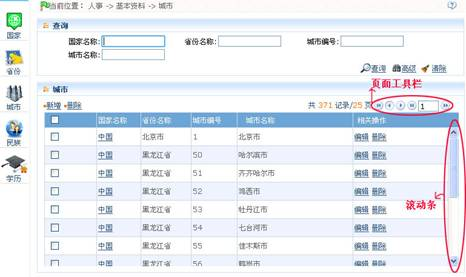
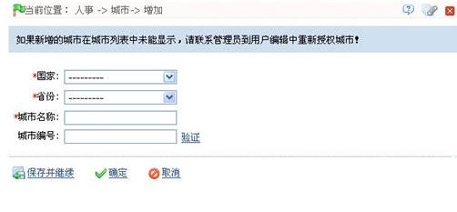
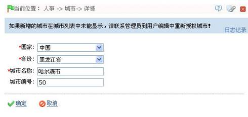
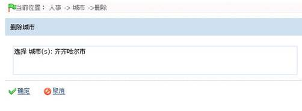

基本资料
基本资料管理
初次使用系统时，系统中已内置了国家、省份、城市、民族和学历的相关信息。在基本资料页面中， 用户在查看基本资料的相关信息的同时，也可根据需要对基本资料进行维护，包括基本资料的新增、编辑和删除操作。
基本资料查看：
此处以“城市”为例：
1、单击【人事】-【基本资料】-【城市】，进入城市资料界面，如下图所示：

2、单击页面中的“页面工具栏”和“滚动条”可查看所有城市信息。
页面工具栏：
：切换到上一页；
：切换到下一页；
：切换到首页；
：切换到尾页。
用户也可以在页面工具栏处，输入数字，然后单击按钮，切换到对应页面。
基本资料维护：
此处以“城市”为例。
新增城市资料
1、在城市资料页面，单击【新增】，进入如下图所示的页面：

各字段说明
国家：单击国家所在栏后的 按钮，在弹出的国家下拉列表中选择国家；
按钮，在弹出的国家下拉列表中选择国家；
省份：单击省份所在栏后的 按钮，在弹出的省份下拉列表中选择省份；
按钮，在弹出的省份下拉列表中选择省份；
城市名称：输入城市名称；
城市编号：输入城市编号，城市编号不可重复，可单击【验证】，查看输入的城市编号是否已存在。
2、设置完成后，若需保存并继续添加，则单击【保存并继续】；若无需继续添加，则单击【保存】；单击【取消】则放弃操作，并返回上一页面。
编辑城市资料
在城市资料页面，单击城市资料所在行的相关操作下的【编辑】，即可进入该城市资料的编辑页面，如下图所示：

用户可根据需要修改该城市的名称、编号和对应的国家和省份。具体操作同新增城市资料一致，此处不再重述。
删除城市资料
1、在城市资料页面，单击城市资料所在行的选择框 ，打钩选中（可多选），然后单击【删除】按钮，或直接单击城市资料所在行的相关操作下的【删除】按钮，进入如下图所示页面：

2、单击【确定】按钮，则删除被选中的城市；单击【取消】按钮，则放弃操作并返回上一页面。
注意：系统默认存在的城市，不可删除，只可编辑。
备注：其他基本资料（国家、省份、民族和学历）的查看与维护操作同城市资料一致，此处不再重述。